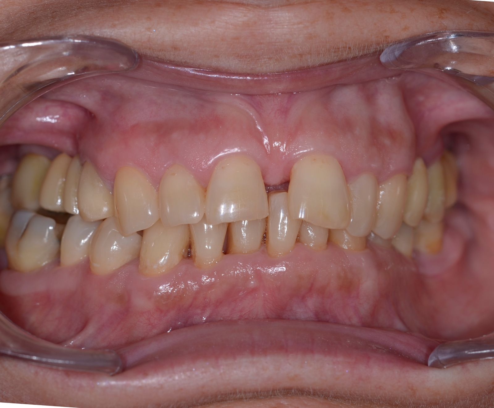
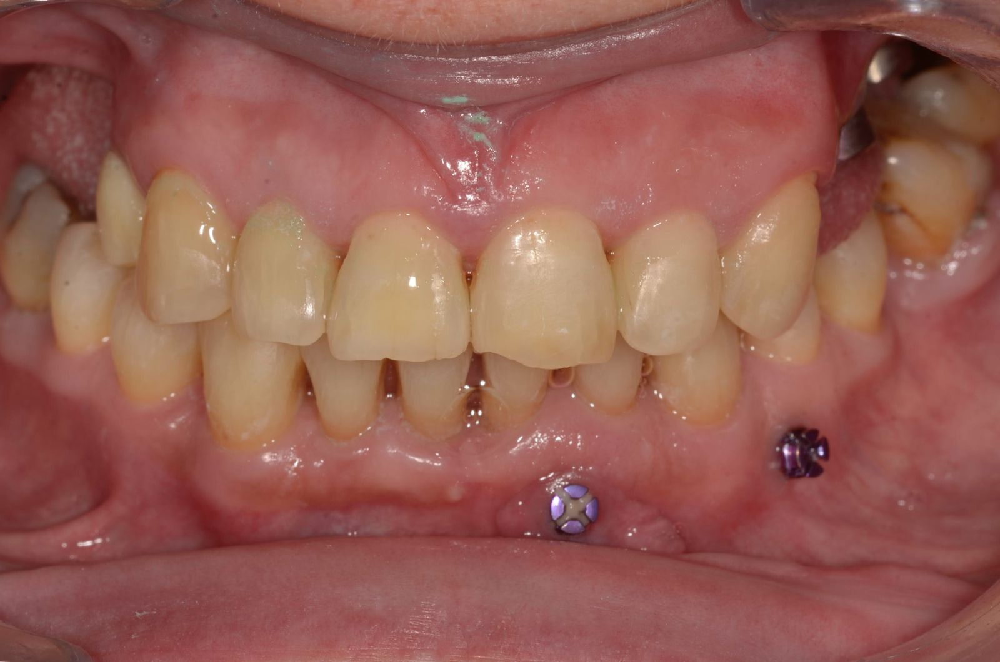
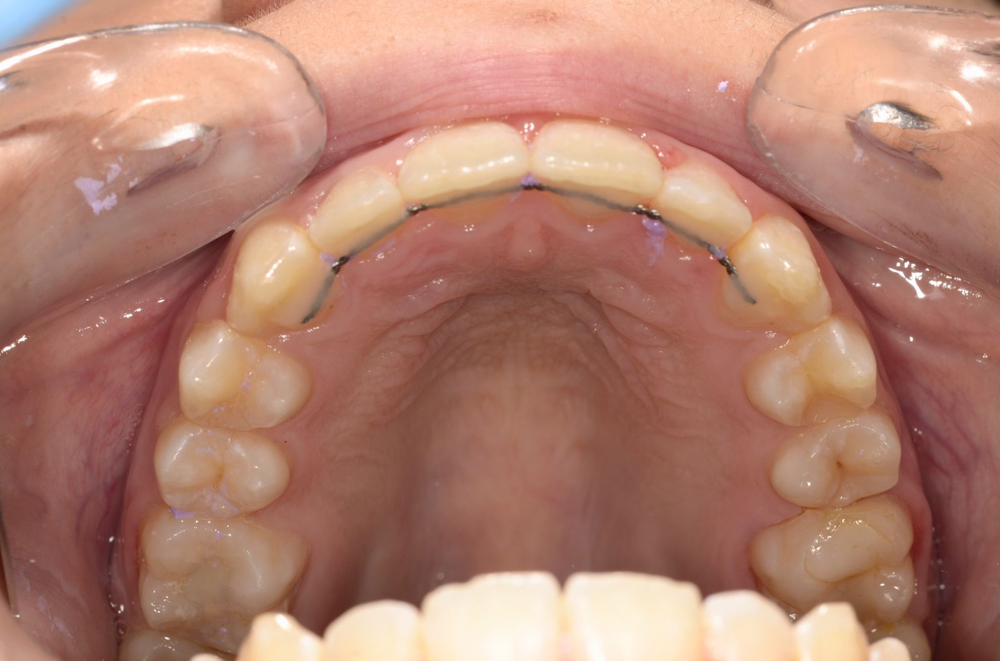
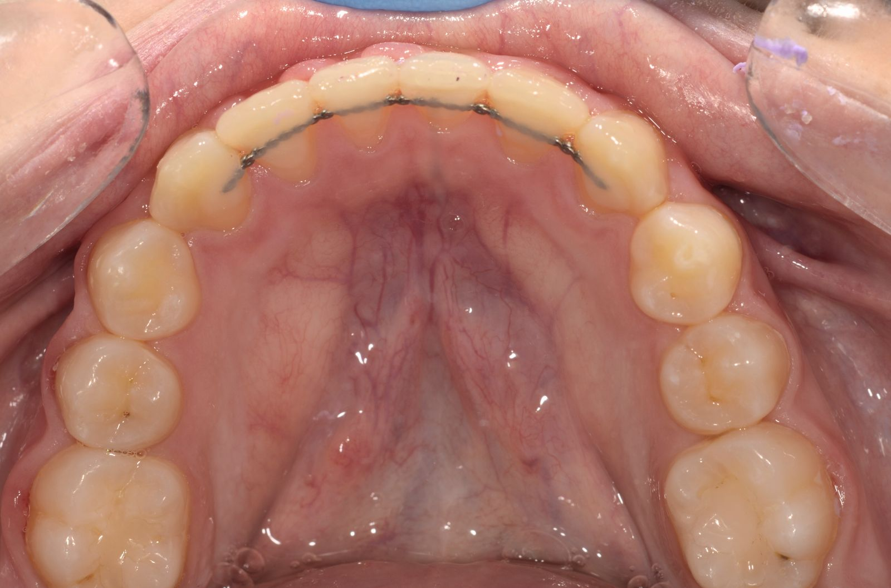
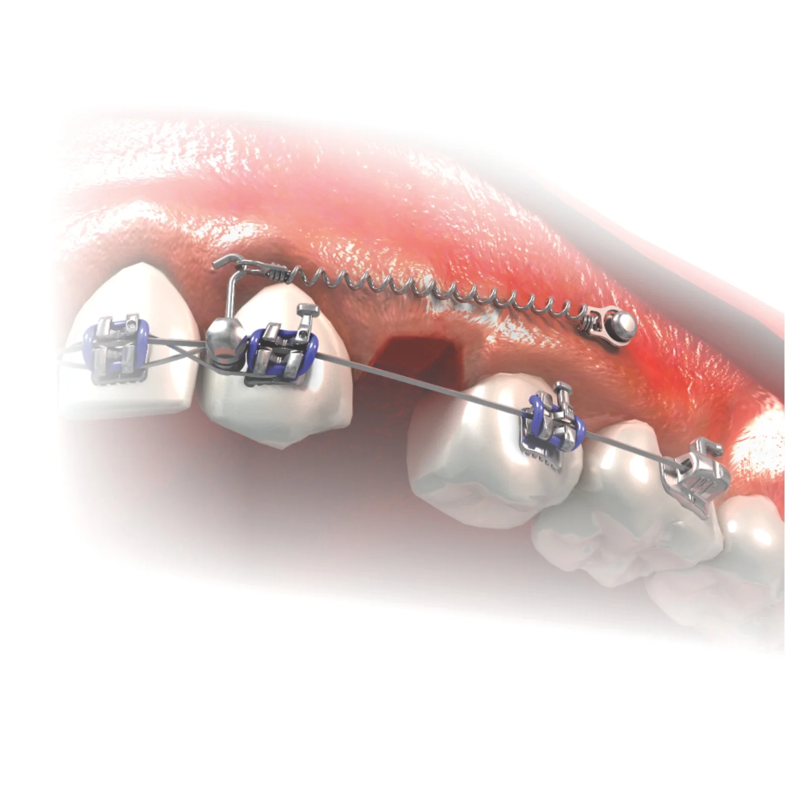

Efektyvus ir patikimas dantų tiesinimo būdas suaugusiems ir paaugliams.
Breketai skirti sąkandžio anomalijų gydymui bei dantų tiesinimui. Jie yra priklijuojami prie dantų specialia, dantims nekenkiančia medžiaga, paruošus emalį.
Nėra taisyklių, kada reikalinga pradėti ortodontinį gydymą breketais, todėl, kad kiekviena situacija yra labai individuali ir reikalauja skirtingų ypatybių. Todėl konsultacija pas gydytoją ortodontą yra būtina situacijai įvertinti, tačiau dažniausiai gydymas pradedamas 12–14 gyvenimo metais.
Tokio amžiaus vaikams jau būna sudygę nuolatiniai dantys, jie sugeba tinkamai valytis dantis ir prižiūrėti dantis tiesinančią sistemą. Be to, vienas svarbiausių dalykų, kodėl svarbu laiku gydyti ortodontinę problemą — yra vis dar nepasibaigęs bendras augimas.
Vidutiniškai ortodontinis gydymas nešiojant breketus trunka iki 2 metų, tačiau tai tiesiogiai priklauso nuo atvejo sudėtingumo, parinktos gydymo metodikos, paciento atsakingumo, lankymosi, burnos higienos palaikymo. Dažniausiai nustatyta gydymo plano trukmė gali skirtis keliais mėnesiais nei numatyta.
Jeigu problema yra ne vien kreivi dantys, bet ir sąkandžio patologija, nepakankamas kitų kaulinių sistemų išsivystymas — šiame amžiaus tarpsnyje iš esmės galima koreguoti augimą ir situaciją nesudėtingai išspręsti.
Tokio gydymo metu ne tik ištiesinami dantys, bet ir keičiama minėtų struktūrų padėtis, dydis (išplečiant žandikaulius, užauginant apatinį žandikaulį ir pan.).
Tai yra stabilu ir nekintama, nes situacija ne dirbtinai „sustatoma", o pacientas „užauginamas" tinkamame sąkandyje. Laiku pradėjus gydymą, keičiasi net paciento veido bruožai.
Nuotrauka bus pridėta
Neretai gydymas pradedamas mišriame sukandime — kuomet nustatomos rimtos problemos, plokštelės nešiojimas abejotinas ir galintis tik dalinai pakoreguoti problemą. Tuomet atliekamas „segmentinis gydymas breketais" klijuojant keletą breketų tik probleminėje vietoje ir ją sprendžiant labai greitai. Šiuo atveju būtina tėvų pagalba vaikui breketų priežiūroje.
Gydymas breketais vyresniame amžiuje turi tam tikrų ypatumų lyginant su paaugliais: suaugusiųjų pacientų ortodontinio gydymo metu nėra naudojami augimą koreguojantys aparatai, neįmanoma išspręsti žandikaulio trūkumo problemų (taikoma kitos metodikos).
Vyresnių pacientų dantys paprastai pradeda judėti kiek lėčiau, tačiau įsibėgėjus gydymui, dantų judėjimo greitis tampa toks kaip ir paauglių dantų judėjimo greitis.


Breketai ne visada išsprendžia visas situacijas. Numatytas pirminis gydymo planas, pasitarus su pacientu, gali kisti, prireikti pagalbinių priemonių, aparatų, mikro sraigtų. Kartais, kad gydymas būtų efektyvus — reikalinga kitų gydytojų konsultacija, gydymas, implantacija, o kartais planuojama ir ortognatinė žandikaulių operacija.
Tai gana dažnai naudojama breketų rūšis. Breketai turi specialias dureles, kurios laiko dantis tiesinančią vielą. Nereikia papildomai rišti ar dėti specialias medžiagas, kurios laikytų vielą brekete.
Tai leidžia naudoti mažesnę trintį breketų sistemoje ir dantis tiesinti mažesne jėga, kas yra privalumas. Dar vienas beligatūrinių breketų privalumas — rečiau lankytis pas gydytoją ortodontą nei įprastai, atlikti lengvesnę burnos ertmės higieną.
Tai breketai, kurių paviršius dengtas rodžio metalu. Breketai yra šviesūs, estetiškesni nei paprasti metaliniai breketai, yra gana smulkūs, dėl ko paprastėja burnos ertmės higiena.
Ši breketų rūšis yra tinkama pacientams, kuriems nustatomas jautrumas metalams (pvz.: jie negali nešioti paprastos bižuterijos, turi odos problemų) dėl rodžio metalo neutralumo. Metalinių breketų didžiąją dalį sudaro nikelis, kas yra dažna jautrių pacientų alergijos priežastis.
Mažiau pastebimi, todėl populiarūs suaugusiųjų tarpe. Šiuolaikiškos technologijos leido sukurti ne tik estetišką, bet ir tvirtą, ne tik mechanine, bet ir chemine jungtimi tvirtinamą breketą.
Šie breketai nekeičia savo spalvos, nėra baltos spalvos, o daugiau atspindintys natūralią paciento dantų spalvą. Sulaužius keramikinį breketą ar nuskėlus jo dalį, reikia pakeisti deformuotą breketą nauju.
Po ortodontinio gydymo visada reikia nešioti papildomus rezultatą užlaikančius aparatus. Tai yra būtina norint išlaikyti pasiektą rezultatą.
Nuėmus breketus nuo dantų, apatiniame ir viršutiniame dantų lankuose iš liežuvio pusės yra klijuojamos nenuimamos retencinės vielos (lankeliai), kurie nesimato ir lieka visam laikui.
Naktimis pacientai turi nešioti retencines kapas arba plokšteles (priklauso nuo pabaigtos situacijos ir planuojamų sekančių odontologinių darbų, jeigu tokie planuojami). Naktinis aparatų nešiojimas yra individualus, skirtingas kiekvienai situacijai, tačiau yra laikinas, nebent pacientas turi kaulo ar dantenų ligų, ar ortodontinis gydymas liko nepabaigtas ir breketai buvo nuimti anksčiau laiko.


Mikro sraigtai yra skeletinės atramos, sukamos į kaulinį audinį ir naudojamos tam tikriems dantų judesiams, kurių vien breketais atlikti neįmanoma. Be to, tai papildoma priemonė skirta pagreitinti ar palengvinti gydymo eigą.
Įsriegus mikro sraigtą ir praėjus nuskausminimui, pacientas gali justi maudimą sriegimo vietoje ar tempimo jausmą. Nemalonūs pojūčiai gali trukti kelias dienas, juos lengva numalšinti nesteroidiniais priešuždegiminiais vaistais.
Jeigu jaučiate, kad mikro sraigtas tapo paslankus — reikia susisiekti su gydytoju ir aptarti tolimesnę eigą. Paslankus mikro sraigtas dar nereiškia, kad jį reikės išimti — galbūt jis atliks reikalingą funkciją ir nebūdamas stabilus kaule.
